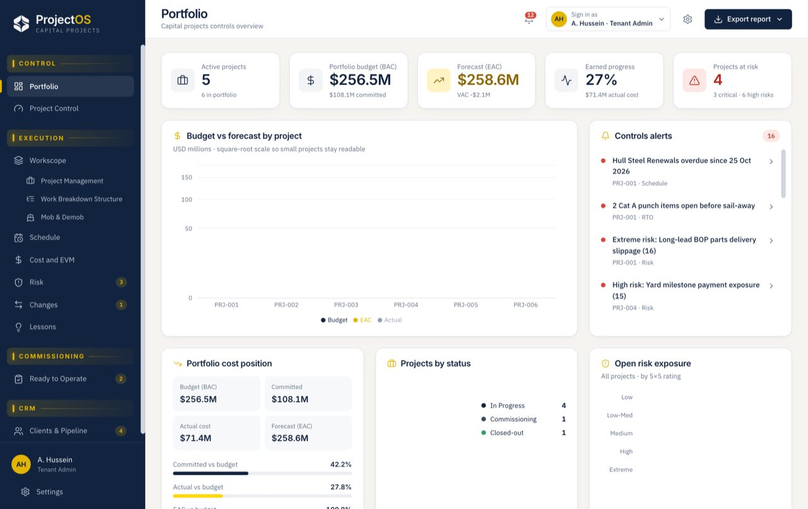
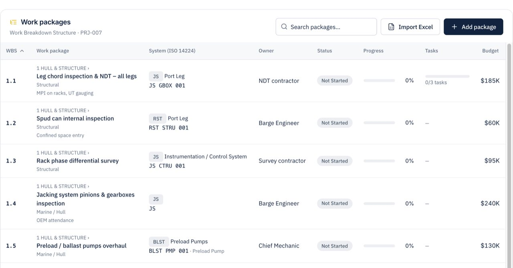
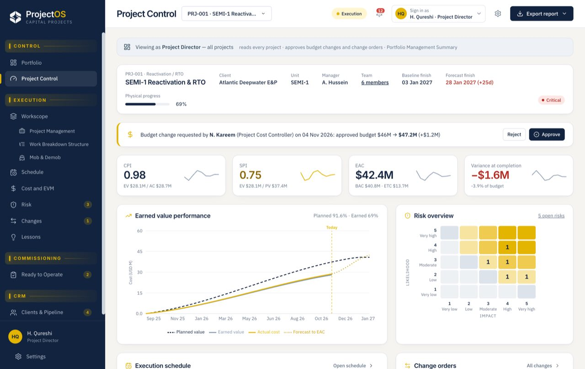
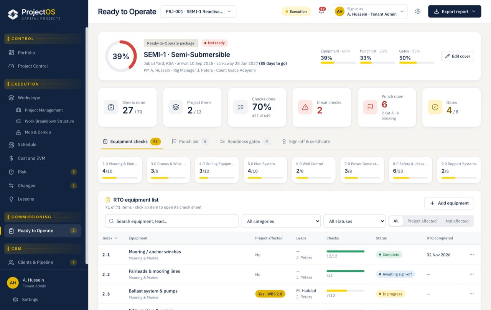
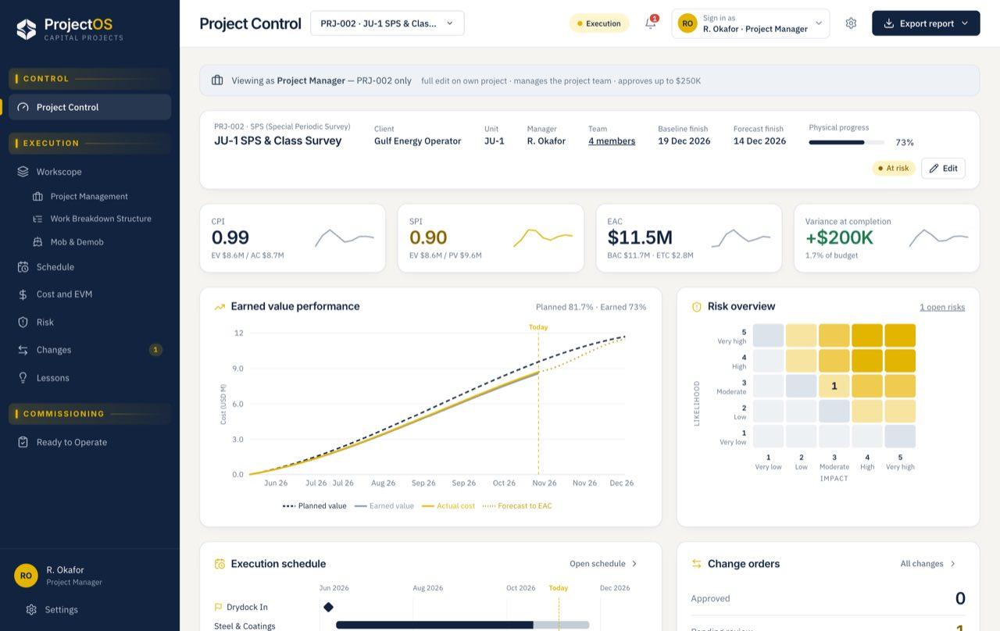

Define the scope
Import an Excel WBS and organize packages, cost lines, dates and system tags.
Capital projects · Cost control · Ready to operate
Control scope, schedule, cost, risk and handover in one project record, from reactivations and surveys to upgrades and new builds.
Every module uses the same workscope, budget and schedule, so the forecast stays current as work changes.
Import an Excel WBS and organize packages, cost lines, dates and system tags.
Compare progress with the baseline, milestones, schedule and project risks.
Follow budget, commitments, actuals and earned-value forecasts together.
Close check sheets, punch items and readiness gates for RTO handover.

Management gets the portfolio view. Each project team gets the controls and decisions for its own work.
Compare approved budget, actual spend and estimate at completion.
See baseline slip, earned progress and upcoming milestones.
Surface exposure, pending approvals and actions needing attention.
Keep the project team, approvals and handover tied to the same controlled record.

Map spreadsheet columns, review the hierarchy and connect work packages to systems and equipment.

Change requests carry their cost and schedule impact, with approvals set by delegated authority.

Track equipment checks, punch-list close-out and readiness gates through to the RTO certificate.
Customer data stays separate. Project assignments determine what each person can see and change.
Directors see the portfolio. Project teams work within their assignments, and client representatives can follow progress without internal cost access.

Assign roles, dates and approval limits to each project team member.
Yes. Import an Excel or CSV WBS, review the mapped columns and work-package hierarchy, then connect it to schedule and cost controls.
Planned value comes from the baseline, earned value from reported progress and actual cost from spend. These feed CPI, SPI, estimate at completion and variance at completion.
Requests include cost and schedule impact. Project managers approve within their assigned limits; requests above those limits route to the project director.
Yes. Client representatives can be given project-scoped access to follow progress without viewing internal cost information.
Yes. Configure project types, workscope, controls and readiness checks for fixed platforms or floating production units.
Choose a reactivation, survey or upgrade. We’ll walk your team through the scope, controls and handover that matter.